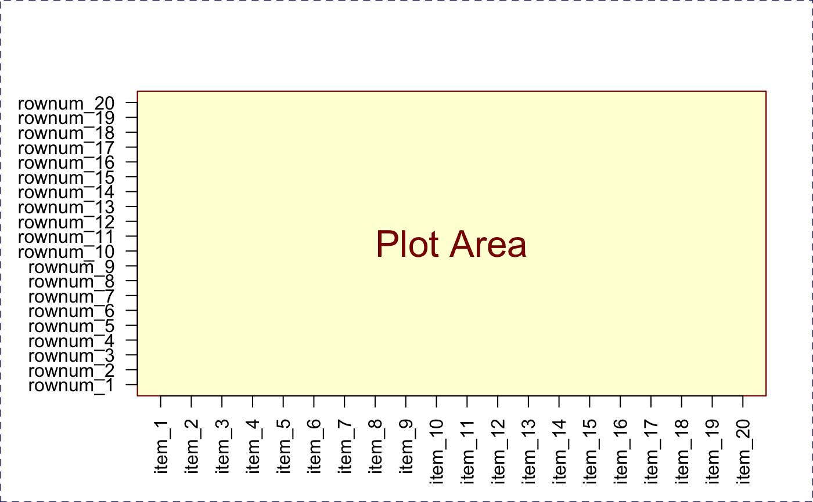
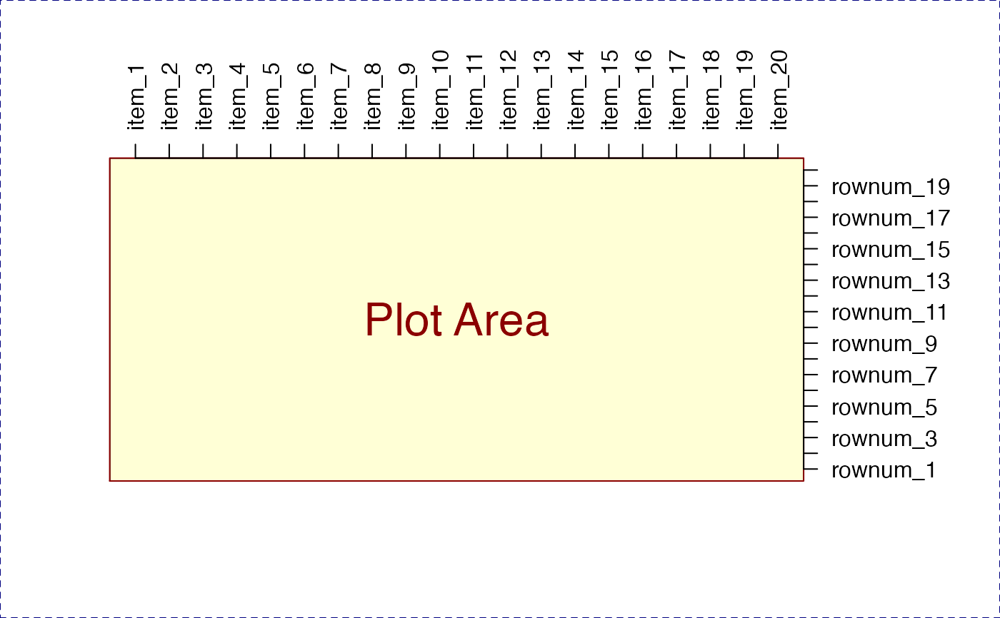

Adjust axis label margins to accommodate axis labels
Arguments
- x
charactervector of axis labels- margin
integervalue indicating which margin to adjust, using the order bygraphics::par("mar"), 1=bottom, 2=left, 3=top, 4=right.- maxFig
numericfraction less than 1, indicating the maximum size of margin relative to the figure size. Setting margins too large results in an error otherwise.- cex
numericor NULL, sent tographics::strwidth()when calculating the string width of labels in inches.- cex.axis
numeric, default uses graphics::par("cex.axis"), to define the axis label size.- prefix
characterstring used to add whitespace around the axis label.- ...
additional parameters are ignored.
Value
invisible numeric margin size in inches, corresponding
to the requested margin from graphics::par("mai").
Details
This function takes a vector of axis labels, and the margin where they
will be used, and adjusts the relevant axis margin to accomodate the
label size, up to a maximum fraction of the figure size as defined by
maxFig.
Labels are assumed to be perpendicular to the axis, for example
argument las=2 when using graphics::text().
Note this function does not render labels in the figure, and therefore does not revert axis margins to their original size. That process should be performed separately.
See also
Other jam plot functions:
coordPresets(),
decideMfrow(),
drawLabels(),
getPlotAspect(),
groupedAxis(),
imageByColors(),
imageDefault(),
minorLogTicksAxis(),
nullPlot(),
plotPolygonDensity(),
plotRidges(),
plotSmoothScatter(),
shadowText(),
shadowText_options(),
showColors(),
sqrtAxis(),
usrBox()
Examples
xlabs <- paste0("item_", (1:20));
ylabs <- paste0("rownum_", (1:20));
adjustAxisLabelMargins(xlabs, 1);
adjustAxisLabelMargins(ylabs, 2);
nullPlot(xlim=c(1,20), ylim=c(1,20), doMargins=FALSE);
graphics::axis(1, at=1:20, labels=xlabs, las=2);
graphics::axis(2, at=1:20, labels=ylabs, las=2);

graphics::par("mar"=c(5,4,4,2));
adjustAxisLabelMargins(xlabs, 3);
adjustAxisLabelMargins(ylabs, 4);
nullPlot(xlim=c(1,20), ylim=c(1,20), doMargins=FALSE);
graphics::axis(3, at=1:20, labels=xlabs, las=2);
graphics::axis(4, at=1:20, labels=ylabs, las=2);
